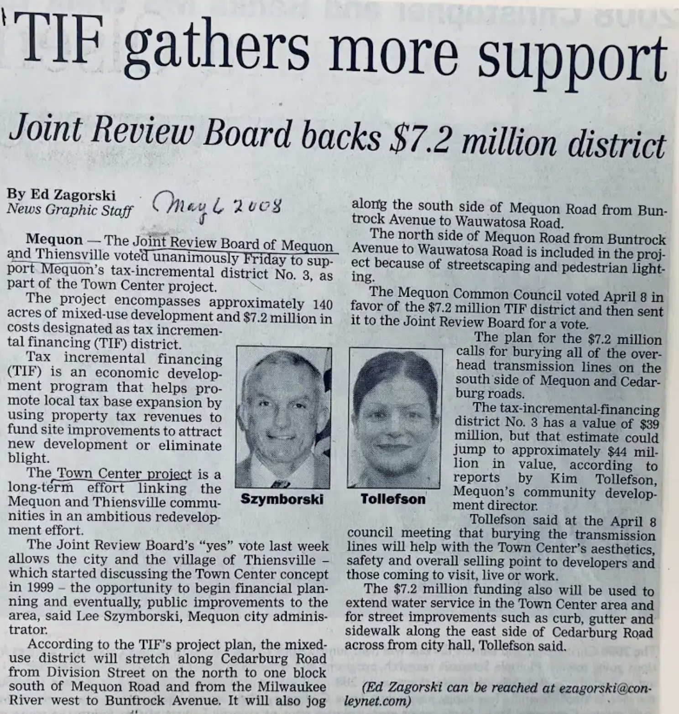
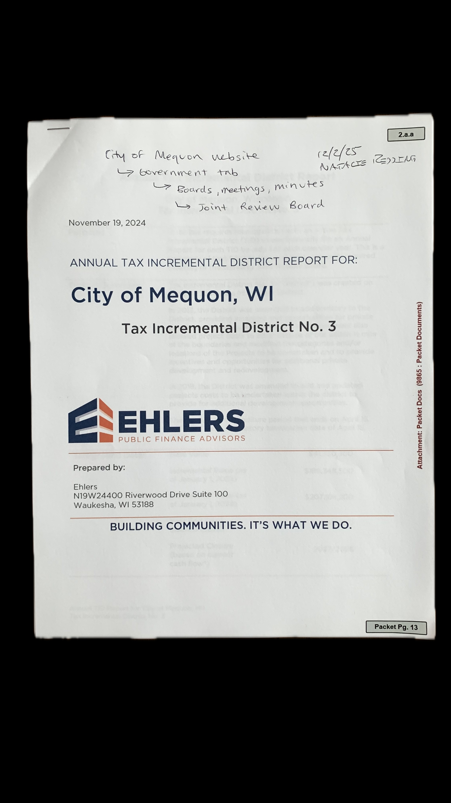

TID Concept
TIDs (sometimes called 'TIFs', earmark tax revenues from properties within the district for infrastructure improvements. They may also include loans and incentives for developers. The goal is for the municipality's spending on infrastructure to be offset by increased property valuations and thus tax revenues. With careful planning and good analysis, municipalities minimize their exposure to risk.
TID Operation
In 2008, the Joint Review Board of Mequon and Thiensville voted to support a mixed-use town center TID at a cost of $7.2 million. The prior month, the Mequon Common Council voted in favor of the TIF. The TID’s infrastructure investments were projected to yield an increase in the tax base of around $44 million. The city improvements were to include burying utility lines, adding curbs and gutters, sidewalks, and extending sewer lines.
The Mequon TID 3 was built around the belief that a development including retail, housing, and public space could counterbalance the Port Washington Road retail and serve the western Mequon market. Could it increase the tax base enough to pay back the city’s investment? Would the development create the identity that Mequon and Thiensville sought?
Mequon Mayor John Wirth said in July, 2013 that the TIF has had “a tremendous impact.” Since the TIFs launch…
- a 285% increase in the district’s tax base
- redevelopment of 11 projects assessed at $160 million
- the addition of 35 new businesses
- removal of 35 acres of blighted, non-conforming uses
- the addition of 15 gathering spaces.
These results confirm the findings of Smith's analysis of TIFs in Chicago ["If You Promise to Build It, Will They Come? The Interaction between Local Economic Development Policy and the Real Estate Market: Evidence from Tax Increment Finance Districts", Real Estate Economics, 28 May 2009]
The TIF’s annual report from November, 2024 showed that the TID was on schedule to meet its financial goals when it closes in two years.
